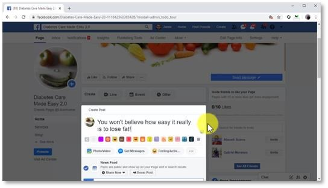
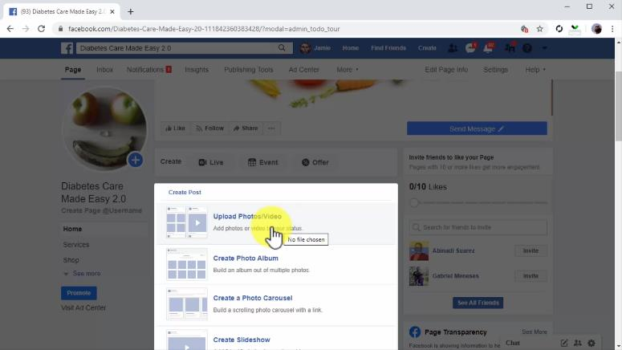
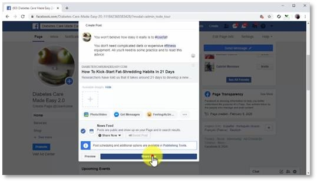

Chapter 3:
Creating Optimized Facebook Marketing Posts
Facebook pages are not just pages but a much more counter of virtual billboards, they’re basically social profiles for brands, companies, and businesses, and they give you all the tools you need to interact with your audience. The primary and most basic tool for interaction is Facebook posting. With Facebook posts you can establish thought leadership by engaging with users through comments, images, videos, and curated content. But Facebook posting can be ineffective if not done right, and in this lesson, we are going to teach you how to compose optimized Facebook posts that reach more people and generate more engagement.
Creating And Composing A Facebook Marketing Post

To create a post on Facebook, you have to start by going to your page and clicking on the “write a post” field on top of the page timeline. Here is where you are going to compose your marketing posts. Now, the secret to creating an effective marketing post is to compose the right structure.
Start with a headline. The post headline is a one-line description of the content in your post and decides the user decision to read or just scroll. Think of it as a blog post title. You have to include an actionable phrase or word, such as “read”, or “watch”, or “you won’t believe”, or information that makes the user stop to read the headline. Now you are going to compose the post copy below. This is going to depend on the content that you are going to share. In general, your post copy is going to be a brief summary of the content that you are going to share.
Now, a
little-known secret to increase your reach is to use keywords in your post as hashtags. Simply identify the keywords in your post text and type a
hashtag symbol right before them. This will transform them into hashtags that make your post discoverable in Facebook searches which will definately increase your brand value. Adding Media And Content Now you are going to insert the media or content that you are going to share, into your post. If you are going to share an image or video, you will simply have to click on the “photo/video” button to upload your media. This is crucial, because text-only posts don’t generate as much engagement as image or video posts. The type of media that generates the most engagement on Facebook are infographics, short videos, and images, so make sure to always include them in your posts. For this example, we are going to share a blog post from our website. When you insert a link into a Facebook post, Facebook will fetch a preview that includes the feature image from the URL into your post.
A word of warning: if you are going to post a video, make sure to upload it directly to the post using the “photo/video” button, instead of sharing it from an outside link. If you share a video from an outside source, the Facebook algorithm basically ignores it, and won’t push it to the timeline of other users. It will only be visible to users that visit your timeline! Ok, so let’s proceed with the example. To insert a link, simply paste the URL below your post text. Once it fetches the preview and inserts the clickable link, you simply have to delete the text URL you pasted. Publishing a Post You can see how your post is going to look in the timeline by clicking on the “preview” button. In the preview window, you can see a desktop preview and a mobile preview. Once you are ready to publish your post, click on the “share now” button. And that’s it!

This is how you are going to compose your Facebook post from now on to get the most engagement and the best results possible. Next up we are going to show you how to easily boost the reach of your newly published post,
so stay tuned!
<< CHAPTER = 2 CHAPTER = 4 >>